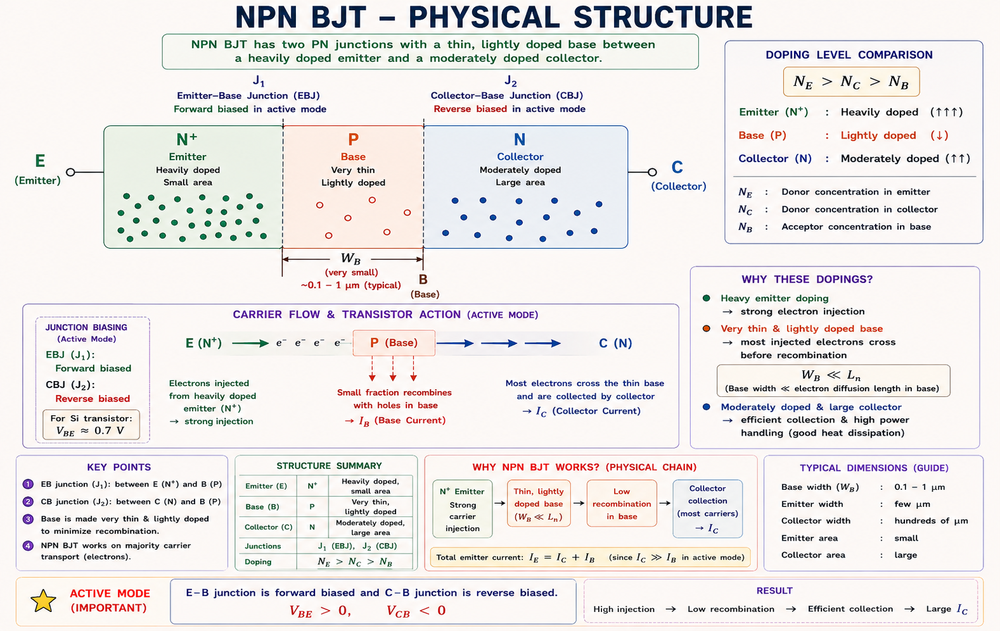
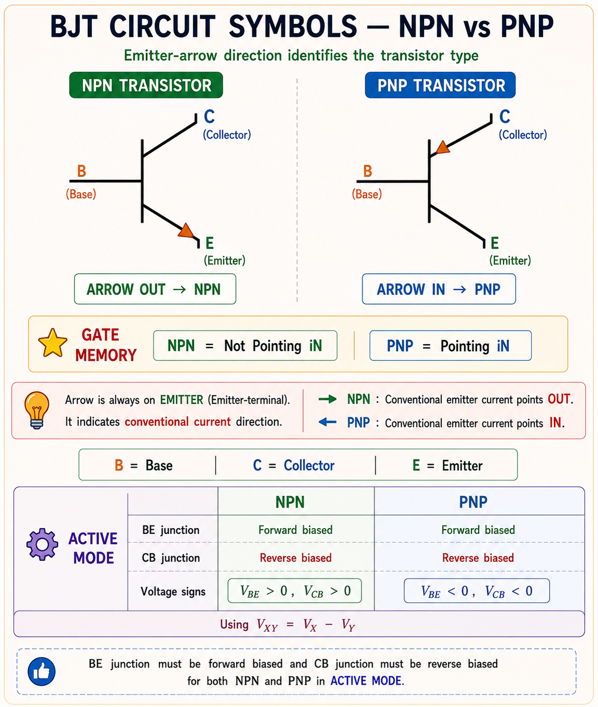
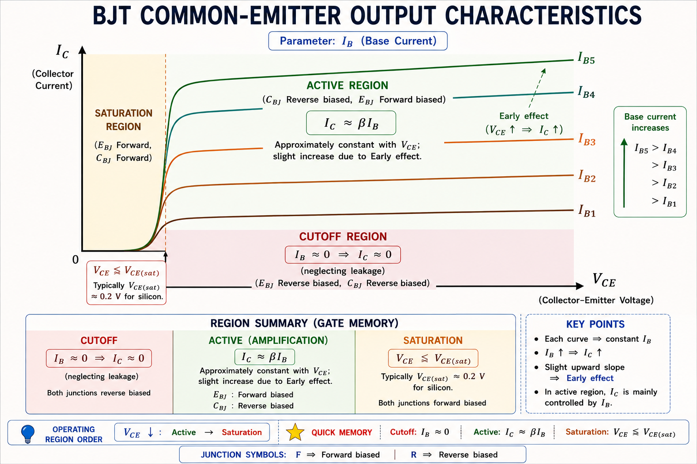
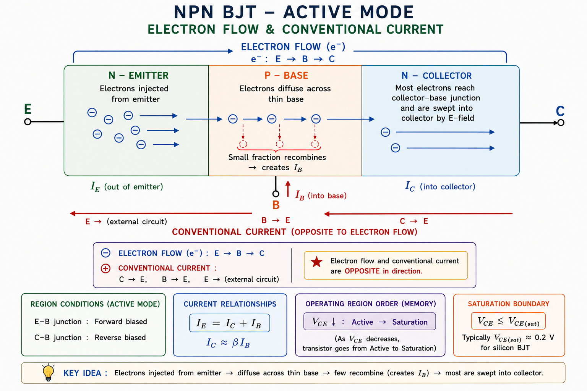
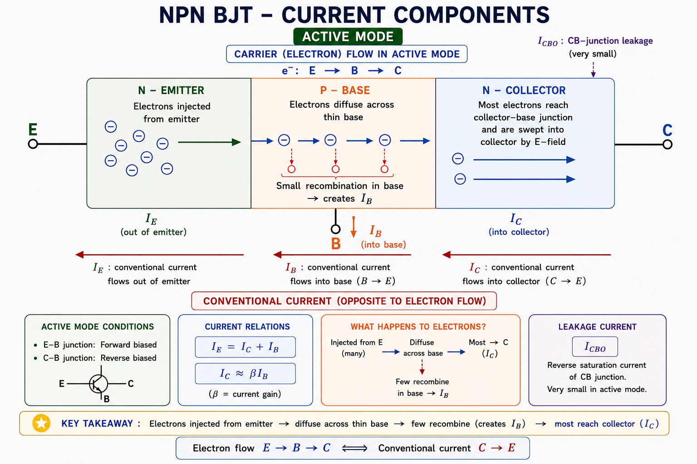
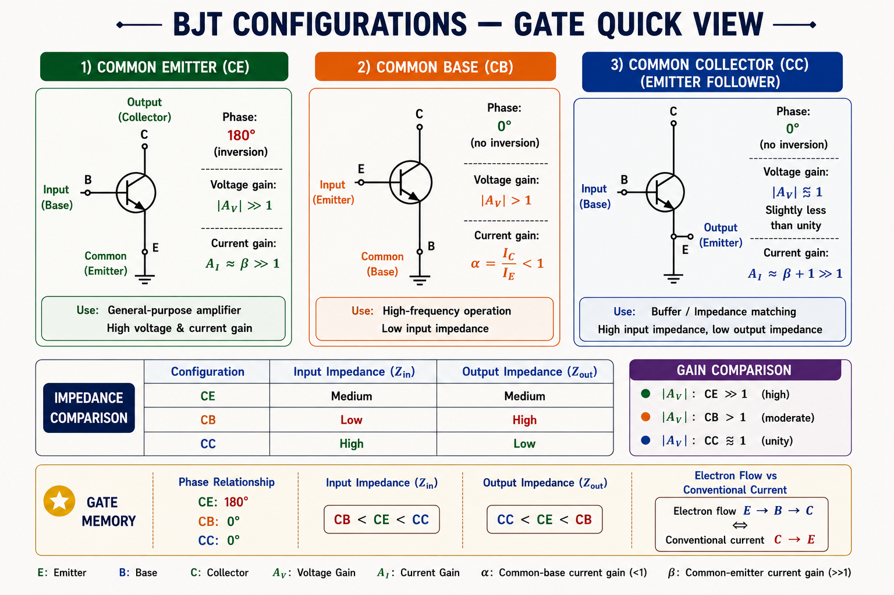
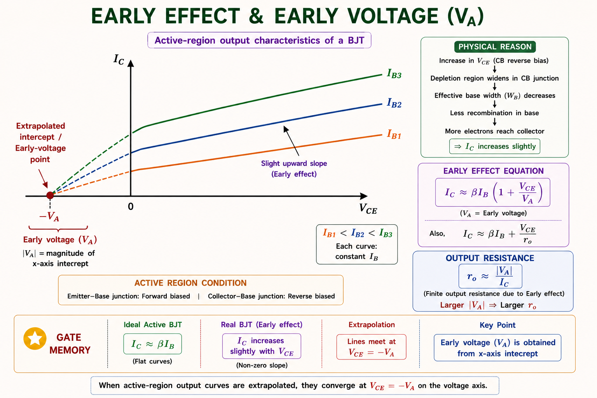
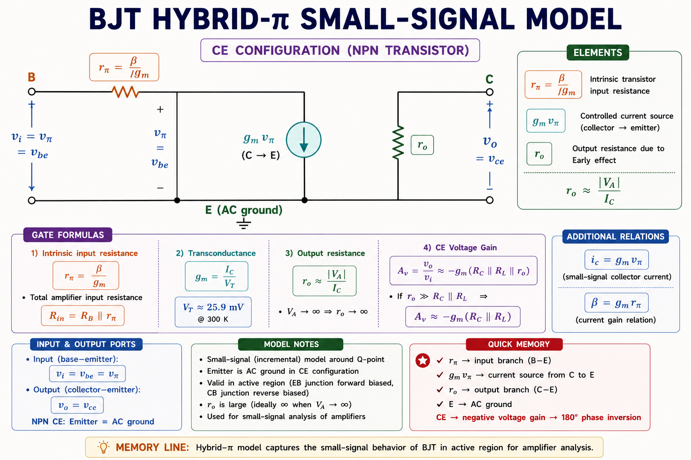

Complete coverage of BJT structure, operating regions, current components, current gain (α, β, γ), CE/CB/CC configurations, Early effect, and small-signal models — aligned with GATE EC/EE, IES E&T, and PSU examination patterns with full derivations and solved examples.
The BJT (Bipolar Junction Transistor) was invented at Bell Labs in 1947 by Shockley, Bardeen, and Brattain — an event that transformed electronics. It is a current-controlled current source: a tiny base current controls a much larger collector current. This current amplification is the foundation of all analog amplifiers and many switching circuits.
Before the BJT existed, engineers used bulky, power-hungry vacuum tubes to amplify signals. The BJT replaced tubes with a tiny semiconductor device, making modern communications, computers, and consumer electronics possible. Even in the age of MOSFETs, the BJT remains fundamental in high-frequency RF amplifiers, precision op-amps, and power electronics.
Think of a BJT like a water tap controlled by a thin trickle. A small flow of water (base current \(I_B\)) moves the tap handle, which controls a large main pipe flow (collector current \(I_C\)). The ratio of main flow to control flow is the current gain β.
A BJT is formed by sandwiching three alternately doped semiconductor regions. There are two types: NPN (n-type emitter, p-type base, n-type collector) and PNP (p-type emitter, n-type base, p-type collector). The device contains two pn junctions in series sharing a common middle layer (the base).[1]

Fig 8.1 — NPN BJT physical structure. The base is intentionally made very thin to ensure minority carrier transit without significant recombination.
Original diagram — Aarova AI · Concept from Sedra & Smith [1], Neamen [2]

Fig 8.2 — IEEE standard BJT circuit symbols. Memory trick: NPN = "Not Pointing iN"; PNP = "Pointing iN Permanently".
Emitter: Heavily doped — supplies majority carriers (electrons in NPN) efficiently. Base: Very thin (≈0.1–1 μm) and lightly doped — minimises recombination so most injected carriers reach the collector. Collector: Lightly doped, larger physical area — collects the carriers; designed to handle higher reverse-bias voltage.
The BJT operates in one of three distinct regions depending on the bias applied to its two junctions (E-B junction = J₁, C-B junction = J₂). These regions determine whether the device acts as an amplifier, a closed switch, or an open switch.[1]
| Region | E-B Junction (J₁) | C-B Junction (J₂) | Device Behaviour | Engineering Use |
|---|---|---|---|---|
| Active | Forward Biased | Reverse Biased | \(I_C = \beta\,I_B\) (linear) | Amplifiers, linear circuits |
| Saturation | Forward Biased | Forward Biased | \(V_{CE} \approx 0.2\) V (saturated) | Closed switch, digital logic HIGH |
| Cutoff | Reverse Biased | Reverse Biased | \(I_C \approx 0\) (off) | Open switch, digital logic LOW |
| Inverse Active | Reverse Biased | Forward Biased | Low gain amplification | Rarely used (poor gain) |

Fig 8.3 — BJT Common-Emitter output characteristics (\(I_C\) vs \(V_{CE}\)). Each curve corresponds to a fixed \(I_B\). The slight upward slope in the active region is the Early effect.
E-B junction forward biased (\(V_{BE} \approx 0.7\) V for Si), C-B junction reverse biased (\(V_{CB} > 0\) for NPN). This is the normal amplifier operating condition.
When the E-B junction is forward biased, the emitter injects a large number of electrons (in NPN) into the p-type base. Most of these electrons — more than 98% in a well-designed BJT — successfully diffuse across the thin base and are swept into the collector by the reverse bias electric field. Only a tiny fraction recombines with holes in the base, creating the small base current \(I_B\).[2]

Fig 8.4 — Electron flow (minority carrier injection) in an NPN BJT in active region. Conventional current directions are opposite to electron flow.
The fundamental collector current equation (active region, NPN) derived from minority carrier diffusion in the base is known as the Shockley-based collector equation:[1]
where \(I_S\) is the reverse saturation current (typically \(10^{-15}\) to \(10^{-12}\) A for Si BJT), and \(V_T = kT/q \approx 26\) mV at room temperature (300 K) is the thermal voltage.
Since \(I_C \propto e^{V_{BE}/V_T}\), the collector current is exponentially sensitive to temperature. For Si BJT: \(I_C\) approximately doubles for every 10°C rise at constant \(V_{BE}\), and \(V_{BE}\) decreases by ≈2 mV/°C at constant \(I_C\). This causes thermal runaway in power transistors — a critical design concern.
Since \(I_C\) is much larger than \(I_B\) (as almost all emitter-injected carriers reach the collector), we have \(I_E \approx I_C\). Typical values: \(I_E = 10\) mA, \(I_C = 9.9\) mA, \(I_B = 0.1\) mA for \(\beta = 99\).
Both junctions forward biased. For NPN: \(V_{BE} \approx 0.7\) V AND \(V_{BC} \approx 0.5\) V (or equivalently \(V_{CE(sat)} \approx 0.1\text{–}0.2\) V). The transistor behaves as a closed switch with a small residual voltage.
In saturation, the collector current can no longer be controlled by the base current. The device is said to be "saturated" — like a tap opened as wide as it can go, further turning has no effect. The collector-emitter voltage reaches its minimum value \(V_{CE(sat)}\).[3]
The condition for saturation is:
In saturation, the forced β is: \(\beta_{forced} = I_C / I_B\), which is always less than the normal (active region) β. GATE questions may give \(I_C\) and \(I_B\) and ask for \(\beta_{forced}\) — never confuse this with active-region \(\beta\).
Both junctions reverse biased. \(V_{BE} \leq 0\) V (or \(V_{BE} < V_\gamma \approx 0.5\) V). The transistor behaves as an open switch. Only the tiny leakage current \(I_{CEO}\) flows.
In cutoff, no significant current flows. \(V_{CE} \approx V_{CC}\) (supply voltage), \(I_C \approx I_{CEO}\) (leakage). This is the OFF state for BJT switches in digital logic.[2]
where \(I_{CBO}\) is the reverse saturation current of the collector-base junction with emitter open. \(I_{CEO}\) is the collector-emitter leakage with base open and is approximately \((1+\beta)\) times larger — a critical GATE formula.
Collector-Emitter with base Open = \(I_{CEO}\). Collector-Base with emitter Open = \(I_{CBO}\). Relationship: \(I_{CEO} = (1+\beta)\,I_{CBO}\). Since \(\beta\) can be 50–300, this leakage amplification matters in high-temperature applications.
Three current gain parameters describe the BJT's amplification capability: α (alpha) for common-base configuration, β (beta) for common-emitter configuration, and γ (gamma) for emitter injection efficiency. These are the most important parameters tested in GATE and IES.[1][2]
\(\alpha\) represents the fraction of emitter current that successfully reaches the collector. Since almost all minority carriers diffuse across the thin base, \(\alpha\) is always less than 1 but very close to 1 — typically 0.95 to 0.999 for a well-designed BJT. A higher \(\alpha\) means a better transistor.
Typical values: \(\beta = 20\) to \(500\). For small-signal AC: \(\beta_{ac} = h_{fe} = \Delta I_C / \Delta I_B\). Note: \(h_{FE}\) (DC) and \(h_{fe}\) (AC) are different — \(h_{fe}\) can differ significantly from \(h_{FE}\) at different operating points.[3]
Many students write \(\beta = I_C / I_E\). This is WRONG. The correct relation is \(\beta = I_C / I_B\). It is \(\alpha = I_C / I_E\). Mixing these up costs marks.
These two gains are not independent — they are related by simple algebra from \(I_E = I_C + I_B\):[1]

Fig 8.5 — Detailed current components in active NPN BJT. \(I_E = I_{nE} + I_{pE}\); \(I_C = I_{nC} + I_{CBO}\); \(I_B = I_{pE} + I_{rec} - I_{CBO}\)
| Gain Parameter | Symbol | Formula | Typical Value | Configuration |
|---|---|---|---|---|
| DC Current Gain (CB) | \(\alpha_{dc}\) | \(I_C / I_E\) | 0.95 – 0.999 | Common Base |
| DC Current Gain (CE) | \(\beta\) or \(h_{FE}\) | \(I_C / I_B\) | 20 – 500 | Common Emitter |
| AC Current Gain (CE) | \(h_{fe}\) | \(\Delta I_C / \Delta I_B\) | 20 – 500 | Common Emitter |
| Emitter Efficiency | \(\gamma\) | \(I_{nE}/I_E\) | 0.99 – 0.999 | — |
| Base Transport Factor | \(\alpha_T\) | \(I_{nC}/I_{nE}\) | 0.98 – 0.999 | — |
$$\alpha = \gamma \cdot \alpha_T \cdot \delta$$ where \(\gamma\) = emitter injection efficiency, \(\alpha_T\) = base transport factor, \(\delta\) = collector efficiency (≈1). This shows how to improve BJT: increase \(\gamma\) by heavy emitter doping, increase \(\alpha_T\) by reducing base width.
The BJT can be connected in three configurations, each with a terminal common to both input and output ports. The choice of configuration determines the voltage gain, current gain, input impedance, and output impedance — all critical for amplifier design.[1][3]

Fig 8.6 — Three BJT configurations at a glance. CE is the workhorse amplifier; CB is used at high frequency (low C-B capacitance); CC (emitter follower) is used for impedance matching.
| Parameter | Common Emitter (CE) | Common Base (CB) | Common Collector (CC) |
|---|---|---|---|
| Current Gain | \(\beta = h_{fe}\) (high, 20–500) | \(\alpha < 1\) (≈0.95–0.999) | \((1+\beta)\) (high) |
| Voltage Gain | High (−R_C/r_e) | High (+R_C/r_e) | ≈1 (slightly < 1) |
| Input Impedance | Medium (β·r_e ≈ 1 kΩ) | Low (r_e ≈ 25 Ω) | High ((1+β)·r_e) |
| Output Impedance | High (r_o ≈ 40 kΩ) | Highest | Low (≈r_e) |
| Phase Shift | 180° (inverting) | 0° (non-inverting) | 0° (non-inverting) |
| Frequency Response | Moderate (Miller effect) | Best (no Miller) | Good |
| Main Application | Voltage amplifier | RF/high-freq amp | Buffer, impedance match |
CE: Current + Emitter gain, 180° phase. CB: Current < 1, Best frequency. CC: Current high, Collector common (emitter output). Remember: only CE inverts the signal.
In an ideal BJT, the collector current in the active region should be perfectly constant regardless of \(V_{CE}\) (for a fixed \(I_B\)). In reality, the output characteristics have a slight positive slope. This is called the Early effect, named after James Early who described it in 1952.[2]
As \(V_{CE}\) increases, the reverse bias on the C-B junction increases, causing the depletion region at J₂ to widen. This depletion region extends into the base, effectively reducing the effective base width \(W_B\). A narrower base means less recombination and a higher \(\alpha\), leading to slightly higher \(I_C\). This is called base-width modulation.[1]
where \(V_A\) is the Early voltage (also written \(V_{AF}\) for forward Early voltage). Typical values: \(V_A = 50\) V to \(200\) V for BJTs. A higher \(V_A\) means a flatter (more ideal) characteristic.

Fig 8.7 — Early effect: when active-region output curves are extrapolated, they converge at \(V_{CE} = -V_A\) on the voltage axis. \(V_A\) is determined graphically from this intercept.
The output resistance \(r_o\) models the slope of the \(I_C\) vs \(V_{CE}\) characteristic in the active region. A high \(r_o\) (large \(V_A\)) is desirable for voltage amplifiers, as it means the collector current is less sensitive to \(V_{CE}\). In current mirrors used in ICs, high \(r_o\) is critical for accuracy.
For AC analysis (small signals superimposed on DC operating point), the BJT is replaced by a linear equivalent circuit. The two standard models are the h-parameter (hybrid parameter) model and the hybrid-π model.[1][3]
| h-Parameter | Name | Definition | Typical Value | Units |
|---|---|---|---|---|
| \(h_{ie}\) | Input impedance | \(V_{be}/I_b\)|V_ce=0 | 1 – 5 kΩ | Ω |
| \(h_{re}\) | Reverse voltage ratio | \(V_{be}/V_{ce}\)|I_b=0 | \(10^{-4}\) – \(10^{-3}\) | Dimensionless |
| \(h_{fe}\) | Forward current gain | \(I_c/I_b\)|V_ce=0 | 50 – 500 | Dimensionless |
| \(h_{oe}\) | Output admittance | \(I_c/V_{ce}\)|I_b=0 | 10 – 50 μS | Siemens |
The hybrid-π model, widely used in IC design and GATE problems, uses transconductance \(g_m\) and intrinsic resistance \(r_\pi\):[1]

Fig 8.8 — Simplified hybrid-π small-signal model of BJT in CE configuration. \(r_\pi = h_{ie} = \beta/g_m\), \(r_o = V_A/I_C\), \(g_m = I_C/V_T\).
Given just the DC collector current \(I_C\) and \(\beta\): compute \(g_m = I_C / 26\text{ mV}\) first, then \(r_\pi = \beta/g_m\). If \(V_A\) is given, add \(r_o = V_A/I_C\). These three parameters fully define the small-signal CE model for GATE problems.
(a) Finding α from β:
(b) Finding I_C:
(c) Finding I_E:
Verify with α: \(I_C = \alpha \cdot I_E = 0.9917 \times 4.84 = 4.8\,\text{mA}\) ✓
Step 1 — Transconductance \(g_m\):
Step 2 — Input resistance \(r_\pi\):
Step 3 — Output resistance \(r_o\):
The high \(r_o = 50\,\text{k}\Omega\) indicates a near-ideal current source behaviour at the collector, important for voltage amplifier gain calculations.
At normal temperature:
After temperature rise (\(I_{CBO}\) doubles to 0.2 μA):
This shows how leakage current — amplified by \((1+\beta)\) — can significantly affect circuit performance at elevated temperatures, causing thermal runaway in poorly designed bias circuits.
🟢 High Probability: α–β conversion, \(I_E = I_C + I_B\), small-signal \(g_m = I_C/V_T\), operating region identification, Early voltage, \(I_{CEO} = (1+\beta)I_{CBO}\).
🟡 Medium Probability: h-parameter equivalence, CE vs CB vs CC comparison, saturation/cutoff boundary conditions, current mirror analysis.
🔴 Lower Probability: Ebers-Moll full model, minority carrier profiles, fabrication doping details.
Explanation: Direct application of \(\beta = \alpha/(1-\alpha) = 0.98/(1-0.98) = 0.98/0.02 = 49\). This is a must-know formula — appears in almost every GATE paper in some form.
Explanation: The ratio \(I_{C2}/I_{C1} = e^{\Delta V_{BE}/V_T} = e^{18/26}\). With \(V_T = 26\) mV, the exponent is \(18/26 \approx 0.692\), giving \(e^{0.692} \approx 2\). The rule of thumb: \(V_{BE}\) increase of ≈18 mV doubles \(I_C\).
Explanation: CC (emitter follower) has the highest input impedance: \(Z_{in} = r_\pi + (1+\beta)R_E\). This is why it is used as a buffer/impedance matching stage. CB has the lowest input impedance (≈r_e ≈ 25 Ω), used in RF where low input Z is needed to match antenna impedance.
Explanation: Early effect = base-width modulation. Increasing \(V_{CE}\) widens the C-B depletion region, which encroaches into the base, decreasing effective base width \(W_B\). Narrower base → less recombination → higher α → higher I_C. This causes the slight upward slope seen in output characteristics.
Stuck on a BJT concept? Ask about operating regions, current gain, small-signal models, GATE numericals, or anything from this chapter.
Three-layer (NPN/PNP) two-junction device. Emitter: heavily doped. Base: very thin, lightly doped. Collector: large area. Key: thin base ensures minority carrier transit with minimal recombination.
Active: E-B forward, C-B reverse — amplifier. Saturation: both forward — closed switch, \(V_{CE} \approx 0.2\text{ V}\). Cutoff: both reverse — open switch, \(I_C \approx 0\). Inverse active: rarely used.
\(\beta = I_C/I_B\) (CE), \(\alpha = I_C/I_E\) (CB). Key: \(\beta = \alpha/(1-\alpha)\), \(\alpha = \beta/(1+\beta)\). \(I_E = I_C + I_B\). \(I_{CEO} = (1+\beta)I_{CBO}\). Typical \(\beta\): 20–500, \(\alpha\): 0.95–0.999.
CE: high \(A_V\), high \(A_I\), 180° phase, medium \(Z_{in}\). CB: high \(A_V\), \(A_I < 1\), 0° phase, low \(Z_{in}\), best at high freq. CC: \(A_V \approx 1\), high \(A_I\), 0° phase, highest \(Z_{in}\) — buffer/impedance match.
Base-width modulation: higher \(V_{CE} \rightarrow\) wider C-B depletion \(\rightarrow\) narrower \(W_B \rightarrow\) higher \(\alpha \rightarrow\) slightly higher \(I_C\). Output resistance \(r_o = V_A/I_C\). High \(V_A\) (100–200 V) is desired.
\(g_m = I_C/V_T\) (mA/V). \(r_\pi = \beta/g_m\). \(r_o = V_A/I_C\). Hybrid-π: controlled source \(g_m v_\pi\). \(h_{fe} \approx \beta\) (AC gain). All three derived from Q-point \(I_C\) alone — powerful tool for GATE.
BJT Amplifier Biasing — Fixed bias, voltage divider bias, emitter stabilisation, stability factors (S, S', S''), DC load line analysis, Q-point selection, and thermal stability — with complete GATE & IES coverage and solved design examples.
All technical content is derived from the following standard textbooks and learning resources. All explanations, derivations, diagrams and examples are original to Aarova AI.